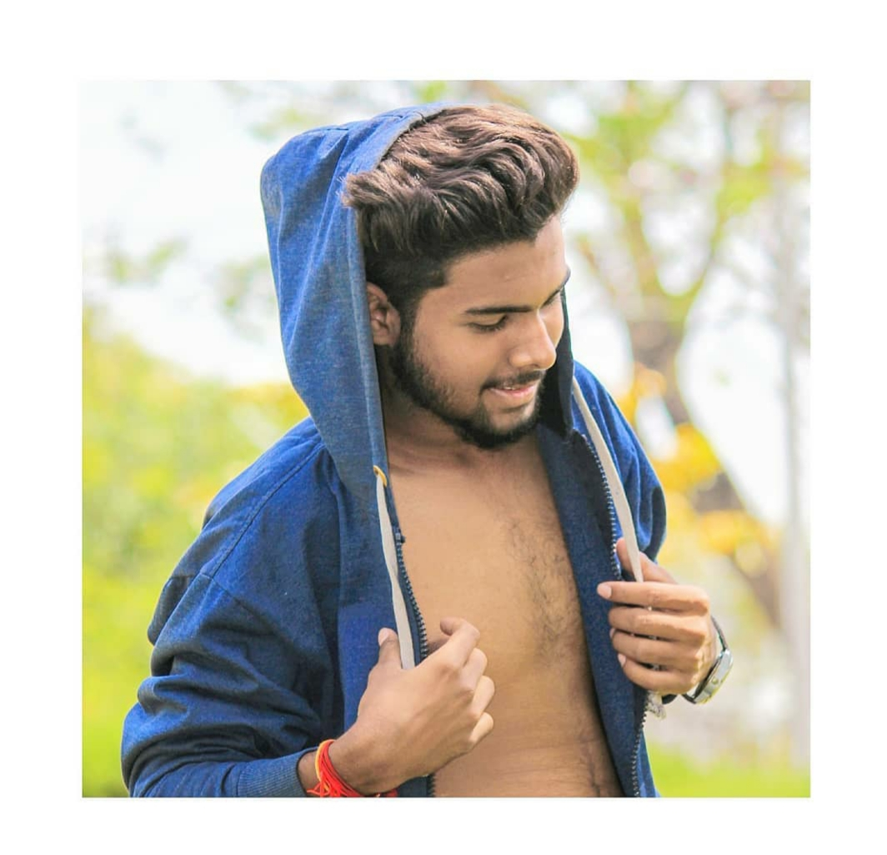
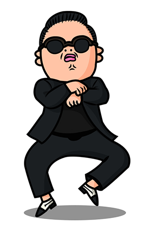
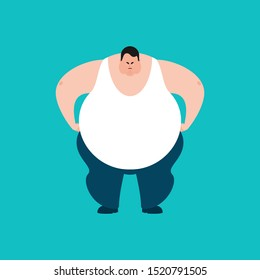
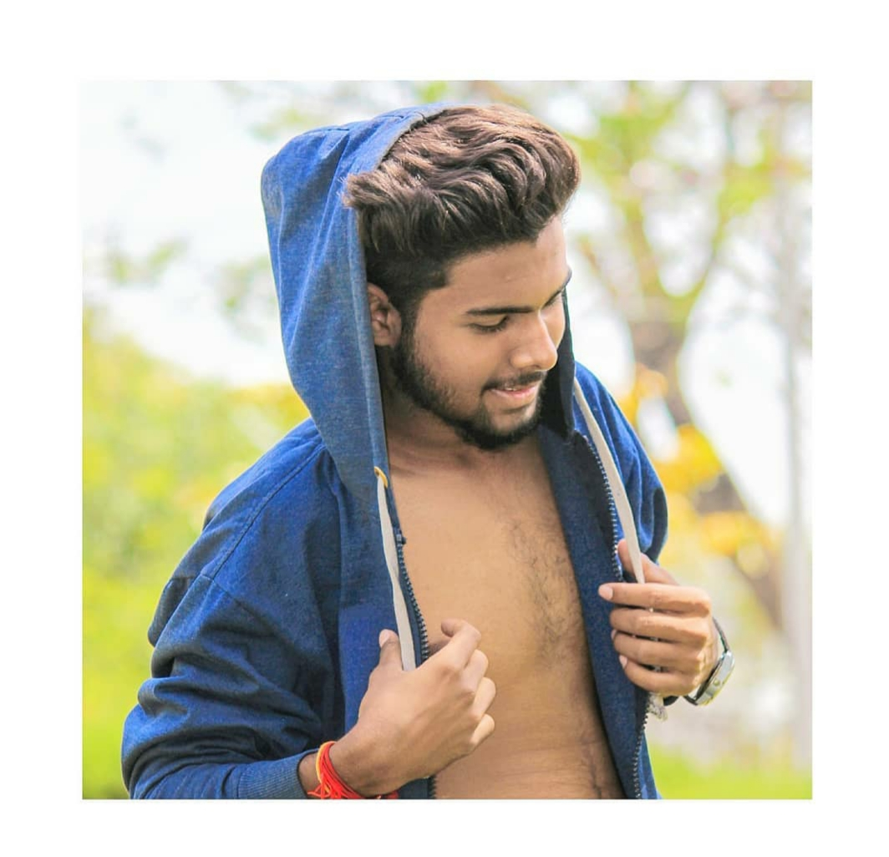
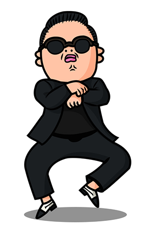
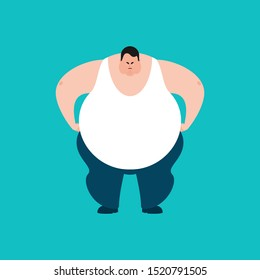

welcome to our page
Hey guys im here to say that from 25th onwards we are planning to make a Longtoor from KARIMNAGAR to LADAk
so everyone in gang to get ready to toor from 25th. its all about 3 weeks,
while started the journey from hyd there are many places we should visit te places
when we entered there are many to visit the places they are:
- Bike race
- The famous food/resturant
- hills
- photoshoot
- celebrations
The things are required to bring by yourslef are and maintain there belogings neatly and place securly from unknown persons. And don't trust anybody when we landed, The things are
- 3 to 5 DSLR CAM
- 5 laptops with chargers
- required memorycards
- carry bags for electronics goods
Here the names of some my friends are :-
- 1st:- SHIVANATH

- 1st:- IMROZEPATAN SAMI

- 1st:- KARANTEJ KANDHI
- 1st:- MANIDEEP JOKER

- 1st:- MADHAV

Here we talk about my friends
- shivanth is a bloody coolest person
 in our gang he never gets angry in anyone of such things he is a tanlented person in all culucular activites. He knows all the things mainly in electronic devices and studies.He always used to play software games like pubg, cod,dual,etc..in laptops, computers and mobilephones.And last we always love to call him shiv_
in our gang he never gets angry in anyone of such things he is a tanlented person in all culucular activites. He knows all the things mainly in electronic devices and studies.He always used to play software games like pubg, cod,dual,etc..in laptops, computers and mobilephones.And last we always love to call him shiv_
- Karantej is a bloody angry perosnin our gang he gets angry in some situations, he has a 0% in angry management. he would also play software games like pubg, cod, etc. he never touches the other games such as carrom ,chess. he has following of girls but he never talk to girls b'coz he is a gamer. And last we always love to call him karan , chotu, nani,etc
- imrosepatan is a bloody personin our gang he always gets fashionable dress, he loves to wear new stylish clothes , he never involve in girls matter, but the girls wiil involve in his matter and they alwaysa wanted to love him in such bloody manner,but he says answer to their directly like by showing
and saying f*******f.
-
Manideep is a bloody person in our ganghe never wents to college,he had a alot of supplies,but he never cleared,he wants to eat alot of food,and their family was a middle class.and her father had a tiffin centre,when he was in home he always wants to go to tiffin centre to eat the foodwith out surving to others.And last we always love to call like moote.
- madhav is a bloddy person in our gang. he is a person never follows time her life. he makes a lot of jokes on others,He enjoyes the life by making jokes and doing her job.He wants allthe thngs in her life by not paying ,he wants all the things freely. and at last we always love to call pothodu.
thankyou ! guys have a nice day
Hey guys im here to say that from 25th onwards we are planning to make a Longtoor from KARIMNAGAR to LADAk
so everyone in gang to get ready to toor from 25th. its all about 3 weeks,
while started the journey from hyd there are many places we should visit te places
when we entered there are many to visit the places they are:
- Bike race
- The famous food/resturant
- hills
- photoshoot
- celebrations
The things are required to bring by yourslef are and maintain there belogings neatly and place securly from unknown persons. And don't trust anybody when we landed, The things are
- 3 to 5 DSLR CAM
- 5 laptops with chargers
- required memorycards
- carry bags for electronics goods
Here the names of some my friends are :-
- 1st:- SHIVANATH
- 1st:- IMROZEPATAN SAMI
- 1st:- KARANTEJ KANDHI
- 1st:- MANIDEEP JOKER
- 1st:- MADHAV
Here we talk about my friends
- shivanth is a bloody coolest personin our gang he never gets angry in anyone of such things he is a tanlented person in all culucular activites. He knows all the things mainly in electronic devices and studies.He always used to play software games like pubg, cod,dual,etc..in laptops, computers and mobilephones.And last we always love to call him shiv_
- Karantej is a bloody angry perosnin our gang he gets angry in some situations, he has a 0% in angry management. he would also play software games like pubg, cod, etc. he never touches the other games such as carrom ,chess. he has following of girls but he never talk to girls b'coz he is a gamer. And last we always love to call him karan , chotu, nani,etc
- imrosepatan is a bloody personin our gang he always gets fashionable dress, he loves to wear new stylish clothes , he never involve in girls matter, but the girls wiil involve in his matter and they alwaysa wanted to love him in such bloody manner,but he says answer to their directly like by showing and saying f*******f.
- Manideep is a bloody person in our ganghe never wents to college,he had a alot of supplies,but he never cleared,he wants to eat alot of food,and their family was a middle class.and her father had a tiffin centre,when he was in home he always wants to go to tiffin centre to eat the foodwith out surving to others.And last we always love to call like moote.
- madhav is a bloddy person in our gang. he is a person never follows time her life. he makes a lot of jokes on others,He enjoyes the life by making jokes and doing her job.He wants allthe thngs in her life by not paying ,he wants all the things freely. and at last we always love to call pothodu.
thankyou ! guys have a nice day